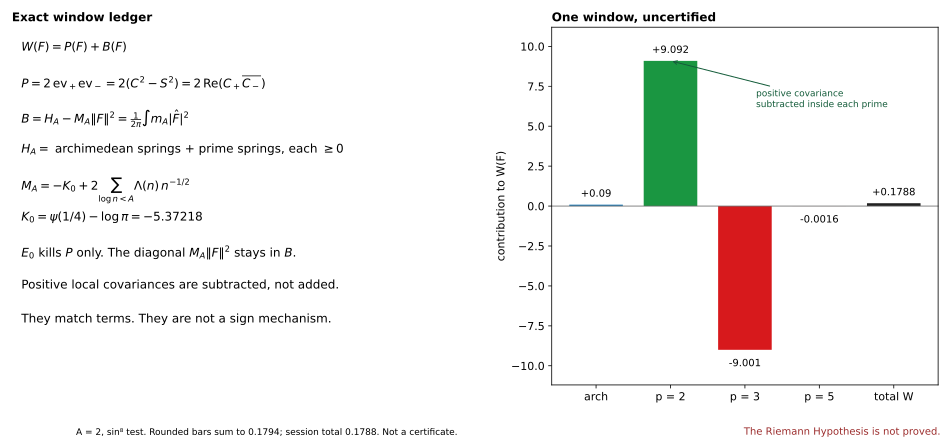
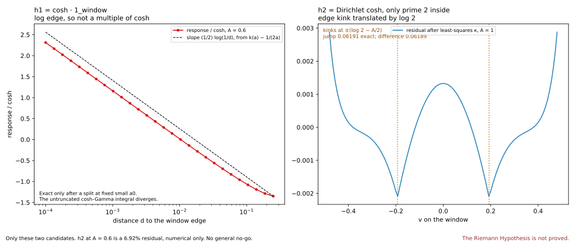
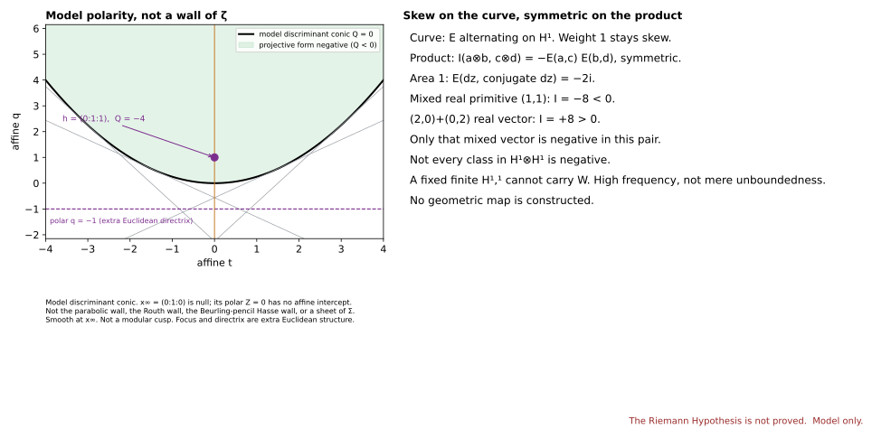
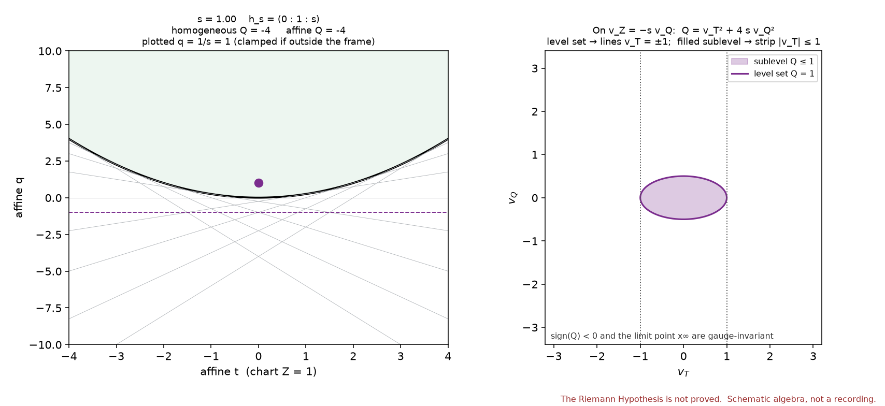
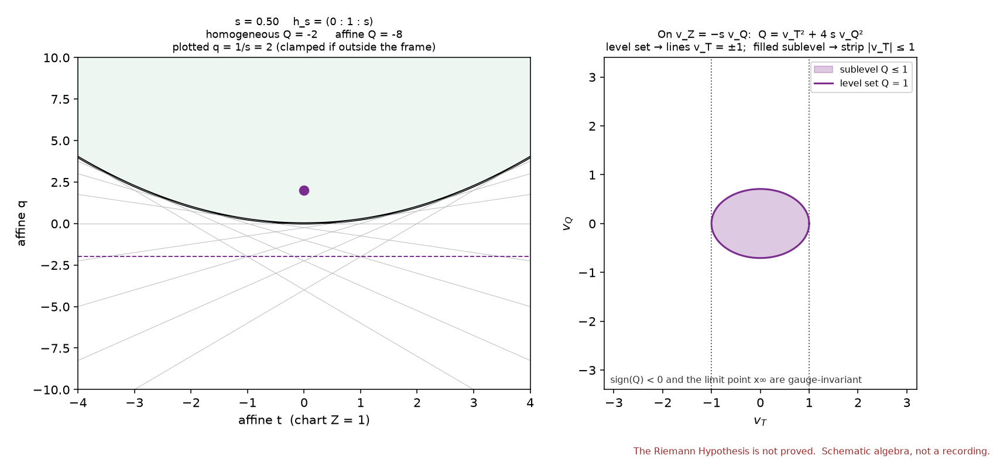
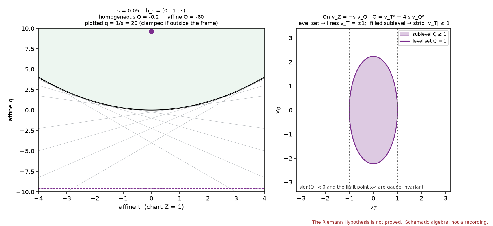
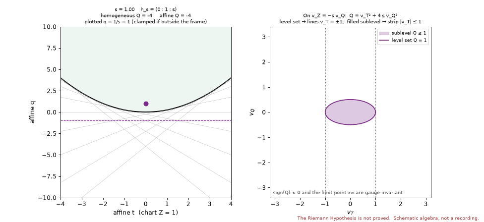

Two pages
W = P + B. The pole is P = 2 ev₊ ev₋, also written 2(C² − S²). The bulk is B = H_A − M_A ‖F‖². H_A adds archimedean springs and prime springs. Each is ≥ 0. M_A = −K₀ + 2 Σ a_n, and K₀ = ψ(1/4) − log π = −5.37218.
RH Atlas · version 1.20 · 8 Nov 2026 (UTC)
No new positivity theorem. Rank 1 is unchanged. The open score near 1.8 is unchanged. The geometric map for W is missing. This page does not claim that a proof is close.
Think of the Weil form as a ledger with two pages. One page is the pole: a product of two moments. The other page is bulk energy: many springs, each pulling the right way, minus a counterterm that sits on the diagonal. Tests that kill the poles throw away the first page. They leave the counterterm on the second page. The open question is whether that second page stays nonnegative. The identities below do not answer it.
The programme would like this ledger to be a real energy, built without looking at the zeros, so that nonnegativity would be a mechanism. That thermodynamic picture, and the unitarity picture that asks for the same sign, are the goal. They are not an established physical theory.
W = P + B. The pole is P = 2 ev₊ ev₋, also written 2(C² − S²). The bulk is B = H_A − M_A ‖F‖². H_A adds archimedean springs and prime springs. Each is ≥ 0. M_A = −K₀ + 2 Σ a_n, and K₀ = ψ(1/4) − log π = −5.37218.
E0 kills P and leaves the diagonal inside B. Off E0, W and B differ. On one window the kernel is closed of codimension 2. On the whole line the moments are unbounded, so E0 is dense. Positive local covariances are subtracted. They explain the rows. They do not sign the total.

For a finite invertible symmetric matrix B and one nonzero constraint, the form on the constraint’s hyperplane is positive semidefinite in two cases only. Either B itself has no negative direction, or it has exactly one and the scalar q = cᵀ B⁻¹ c is at most zero. A positive definite matrix has q positive, and the restriction is still positive semidefinite. Two negative directions cannot be removed by one constraint. On a reflection-invariant finite Galerkin space with invertible blocks, B is nonnegative on E0 exactly when the even sector and the odd sector each pass that test. The vector B⁻¹ c is built from B, so it is not an independent bridge, and the infinite-dimensional inverse is not proved. A fixed finite cohomology cannot carry W because, at high frequency, B is positive definite on an infinite-dimensional subspace of smooth E0. Unboundedness alone does not prove infinite rank. Finitely many negative directions on one window is not a sign.
The candidate cosh on the window fails. The proof splits the integral at a fixed small distance: the untruncated comparison with the smooth continuation of cosh diverges, and after the split the edge is a logarithm. The Dirichlet candidate, at width 1, fails by a kink of slope 0.06191 where log 2 translates the edge into the window.
Those are two candidates. The 6.92 percent residual at width 0.6 is numerical only. A law for every representer, a universal 1/log profile, and a Gamma-only no-go are conjectures. E0 minima are estimates, not certified brackets. The reported figures are absolute cosines, not squared overlaps. At width 2 the tiny values from two bases disagree. Neither is certified.

A single quadratic form can be negative on one vector and positive on that vector’s polar. The zero set is a smooth conic. In an affine chart it looks like a parabola. That curve is a discriminant boundary of the model. It is not the parabolic wall, not the Routh wall, not the Hasse wall of the Beurling pencil, and not a sheet of Σ. Focus and directrix are extra Euclidean structure. The point at infinity is smooth, and its polar does not meet the affine chart.
On a product of curves the skew pairing of the curve becomes a symmetric pairing, I = −E ⊗ E. One real primitive class of mixed type squares to −8. Another, in types (2,0) and (0,2), squares to +8. The model has both signs. It does not build a map from E0. The Hodge index, as a cited pattern, is Hartshorne, Algebraic Geometry, GTM 52, Chapter V, Theorem 1.9, not a Wikipedia article and not a constructor for W.

The moving point is h_s = (0 : 1 : s). On that homogeneous representative, Q = −4s. Drawn in the affine chart, the height is q = 1/s and the value is Q = −4/s. At s = 1 both read −4. At s = 0.05 they read −0.2 and −80. The sign stays negative, and the projective limit is the null point at infinity. The two numbers are not substitutes for each other.
On the right, the curve is the level set v_T² + 4 s v_Q² = 1. It lengthens toward a pair of lines. The shaded set is the sublevel, where the form is at most 1. That shaded set lengthens toward a strip. The level curve does not become the strip.




The corrected narrative is notes/v120/SYNTHESIS_CORRECTED.md. Raw notes are archived as historical under provenance.